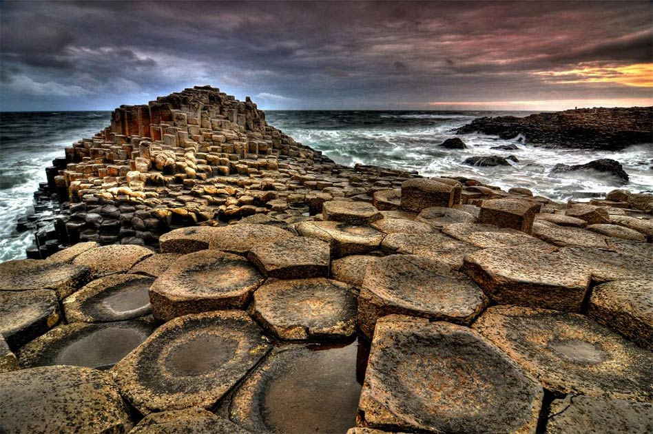

Los polígonos están presentes en nuestra vida diaria, tanto en los objetos construidos por el ser humano como los que están presentes en la naturaleza, los más cotidianos para nosotros son los triángulos, los cuadrados y los rectángulos.
PARA HACER EN LA FICHA DE TRABAJO DEL PORTFOLIO: En las imágenes que se muestran a continuación, identifica los polígonos que veas, realiza un croquis de cada uno, señalando cuantos lados, vértices y ángulos hay. Observa y clasifica sus ángulos ¿podríamos hacer alguna clasificación? En base a la clasificación que hagamos dibuja tres ejemplos (distintos a los de las fotos) de polígonos que cumplan las características de la clasificación que hemos dado.
IMAGEN 1

IMAGEN 2
IMAGEN 3
IMAGEN 4

IMAGEN 5
IMAGEN 6
Para esta actividad se dispondrá al alumnado en grupos de tres para la identificación de los polígonos de las imágenes. Cada alumno/a realizará el croquis en su cuaderno de las figuras identificadas y compararán con el grupo los elementos del polígono que han señalado así como la clasificación de los ángulos. El grupo debe obtener las conclusiones finales sobre la clasificación de los polígonos en base a los ángulos que lo conforman y aportar los ejemplos que cumplan las características de la clasificación de los polígonos según sus ángulos. Con esta actividad se pretende trabajar el concepto de polígono y los elementos que lo componen a través de ejemplos de la vida cotidiana. Se trabaja la comparación y clasificación de ángulos y se pretende llegar a la clasificación de polígonos según sean cóncavos (al menos un ángulo mayor de 180º) o convexos (todos los ángulos menores de 180º).
Temporalización: 1 sesión.